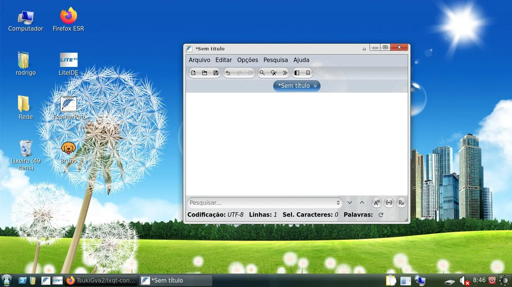
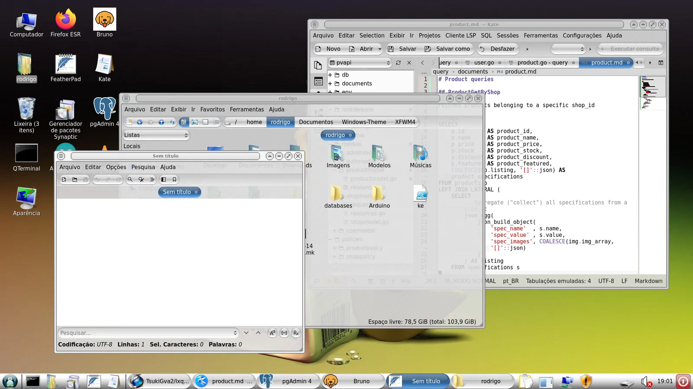
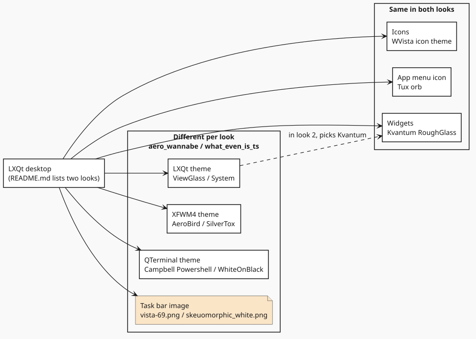

- Role
- Author
- When
- Mar 2026
- Stack
- LXQt, Kvantum, XFWM4, QTerminal
- Links
- lxqt-config
What it is
The repo says "config and image", and that is about it. It has no config files, just a README and three images. The README documents two desktops I set up, aero_wannabe and what_even_is_ts. For each one it lists the icon theme, the LXQt theme, the XFWM4 theme, the widget theme, the app menu icon, the task bar background, the QTerminal theme and the wallpaper.

aero_wannabe: ViewGlass, AeroBird borders, a Frutiger Aero wallpaper.
what_even_is_ts: SilverTox borders and a white task bar, while working on PvAPI.Design decisions
- Mix themes, one per layer. The icons, the window borders, the widgets and the terminal each get their own theme. Nothing here is one big theme pack.
- Keep what the two looks share. Both use the WVista icons, Kvantum RoughGlass and the Tux orb as the app menu icon.
- Let Kvantum do the widgets. In the second look the LXQt theme is "System", which selects the Kvantum theme.
- Keep the task bar image in the repo. Each look has its own 44 px strip as the task bar background, committed next to the README.
Code overview
There is no code, so this is a map of the layers the README lists. The parts below quote it.

diagrams/lxqt-config.puml).Look 1: aero_wannabe
Frutiger Aero, or my attempt at it. Every layer is a named theme.
- Icons: [WVista icon theme](https://www.opendesktop.org/p/1895674/)
- LXQT theme: [ViewGlass](https://www.opendesktop.org/p/1637500/)
- XFWM4 theme: [AeroBird](https://www.pling.com/p/2343514)
- Widget Theme: Kvantum RoughGlass
- App menu icon: [Tux orb icon](https://www.opendesktop.org/p/1108101/)
- Task bar background image: <img width="1500" height="44" alt="vista_67" src="https://github.com/TsukiGva2/lxqt-config/blob/9c182c50840e5d93c07fdcdd407867aff7244c58/Images/vista-69.png" />
- QTerminal theme: [Campbell Powershell](https://www.opendesktop.org/p/2274592/)
- Wallpapers: (Frutiger Aero Archive)[https://frutigeraeroarchive.org/wallpapers]Look 2: what_even_is_ts
A silver, skeuomorphic one. The LXQt theme is just "System", which picks the Kvantum theme.
- Icons: [WVista icon theme](https://www.opendesktop.org/p/1895674/)
- LXQT theme: System (Selects the Kvantum theme)
- XFWM4 theme: [SilverTox](https://www.pling.com/p/1180325)
- Widget Theme: Kvantum RoughGlass
- App menu icon: [Tux orb icon](https://www.opendesktop.org/p/1108101/)
- Task bar background image: <img width="1920" height="44" alt="skeuomorphic_white" src="https://github.com/TsukiGva2/lxqt-config/blob/9c182c50840e5d93c07fdcdd407867aff7244c58/Images/skeuomorphic_white.png" />
- QTerminal theme: WhiteOnBlack
- Wallpaper: The task bar image
Each look has its own strip for the task bar background, kept in Images/. Both are 1920×44.
- Task bar background image: <img width="1500" height="44" alt="vista_67" src="https://github.com/TsukiGva2/lxqt-config/blob/9c182c50840e5d93c07fdcdd407867aff7244c58/Images/vista-69.png" />- Task bar background image: <img width="1920" height="44" alt="skeuomorphic_white" src="https://github.com/TsukiGva2/lxqt-config/blob/9c182c50840e5d93c07fdcdd407867aff7244c58/Images/skeuomorphic_white.png" />History
13 commits, all on 17 Mar 2026.
- 17 Mar 2026Initial commit, then the first image in the README.
- 17 Mar 2026Theme notes in a
theme.md, later deleted and folded into the README. - 17 Mar 2026The README grows: more themes and wallpapers, then the task bar images.
- 17 Mar 2026"Added xfwm4 themes", then a last README tweak to images and theme links.
More pictures
vista-69.png).skeuomorphic_white.png).